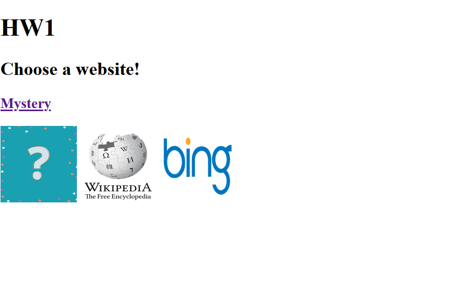
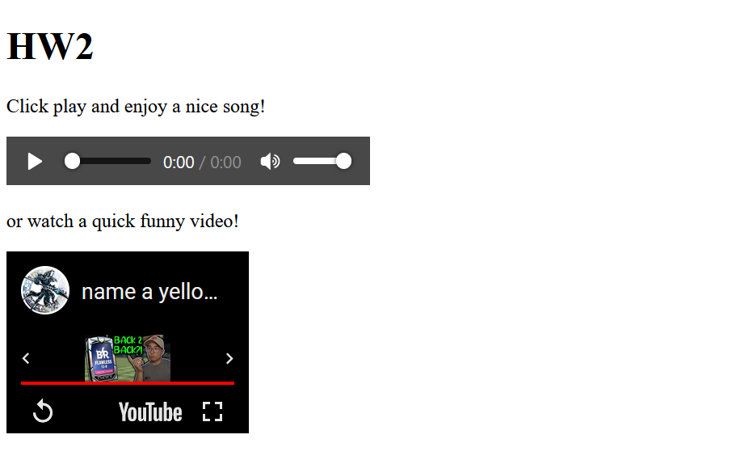
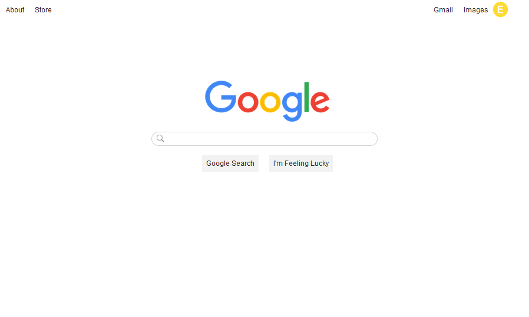
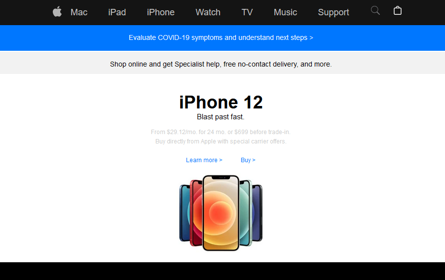

HW1
HW2
HW3
HW4
   These are very necessary in web design as everything will have an HTML tag and these tags will mostly always have a start and an ending. These tags can be used for everything from letting the page know that you are using an HTML document to something as little as letting the webpage know you are putting a header on the page. This will be very important for creating a webpage later in the year, as well as being a fairly easy topic to understand it shouldn’t be too hard to apply to the web page creating process, hopefully!
Very useful tags can be used for inputs and buttons. These buttons will help with the visual aspect of the webpage design, as well as make certain things easier to apply to the webpage. One useful thing I can already see myself doing with buttons for my webpage would be using it to either switch between images or maybe even my blog posts. This was also another topic that was easy to grasp throughout the week.
This weeks topic focused more on the design aspect of the webpage. With styling this gives you the ability to edit certain attributes of the webpage such as colors, fonts, alignment of text and many more. This is a game changer as I could now make my future website not only include everything I think it needs, but also be able to design it and position everything the way I feel will look best. Best part was this is another topic that I felt was easy to grasp.
This topic is very useful for adding things to your webpage that you could watch or hear such as, music or videos. Another tool to add to the toolbox to help create the best webpage I can. This will be very helpful for adding related videos and songs that I feel would fit the webpage well. Although this topic was fairly easy to incorporate into my assignments there were some aspects that were harder to find files to put into the tag and have it work.
There are multiple ways to write a color in CSS. The three ways that we learned were Hex, RGB and HSL. They are all great but some are easier for certain things and I find that HSL was the easiest for me to use this week and incorporate into my assignments and I feel that in the future I can see myself using it for my webpage. It will be easier for me to find the colors I want because I prefer lighter colors and one of the aspects of HSL is lightness. So, it will help me lighten colors that I want on my webpage and again this topic came easy to me.
Selectors are used very often in CSS as these are what helps you select the HTML elements that you want to style. This can not only be helpful because it lets you group certain elements so that those elements and only those elements will have a certain design, but it will also make the code a lot easier to read rather then putting all the styling inline with the elements. This topic was another one that I didn’t find much trouble in learning.
External CSS now gives us the ability to put all of the styling for a webpage into a separate file that can be linked to the HTML. This will be very useful for keeping track of what styling is done on each specific elements as well as make the HTML coding a lot easier to read and less messy with all of the inline styling that would have been there now in a separate file. This topic was quite easy to understand as it incorporated topics learned previously like CSS Selectors and Styling tags.
This will be another file linked to the HTML and this will be a JavaScript file. This file will contain variables and all these variables contain a datatype type. There are many datatypes such as numbers, arrays, strings, etc. What these data types do is give the computer a logical understanding of what the variable is. For example to show 5 is a number or to show “Ryan” would be defined as a string. Since I had some previous knowledge in JavaScript this was another easy topic to understand.
Conditional statements were great topics to learn together as they go hand and hand. A conditional statement will take a block of code and then return an outcome for that code depending on if they conditions are met or not. Then a loop will continue to run a certain code over and over until a certain requirement or end result is met. This will be very helpful in my webpage as I will definitely want certain things on my webpage to only occur under certain conditions and the conditional statements will be very helpful with that.
A JavaScript function is a line of code created to perform a certain task when that code is called. Parameters for the function are classified in parenthesis following the function keyword. Then the code that will be executed will be written in brackets following the function keyword and parameters listed in parenthesis. This will be very helpful for making buttons actually perform actions when pressed rather then just be there for design and not have a purpose. This topic was also pretty easy to grasp with the previous knowledge of Java that I had.
Music I like to listen io while I work